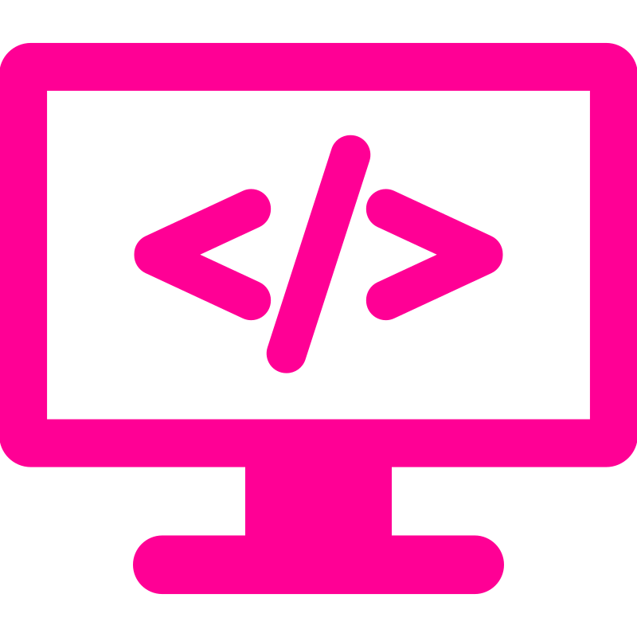
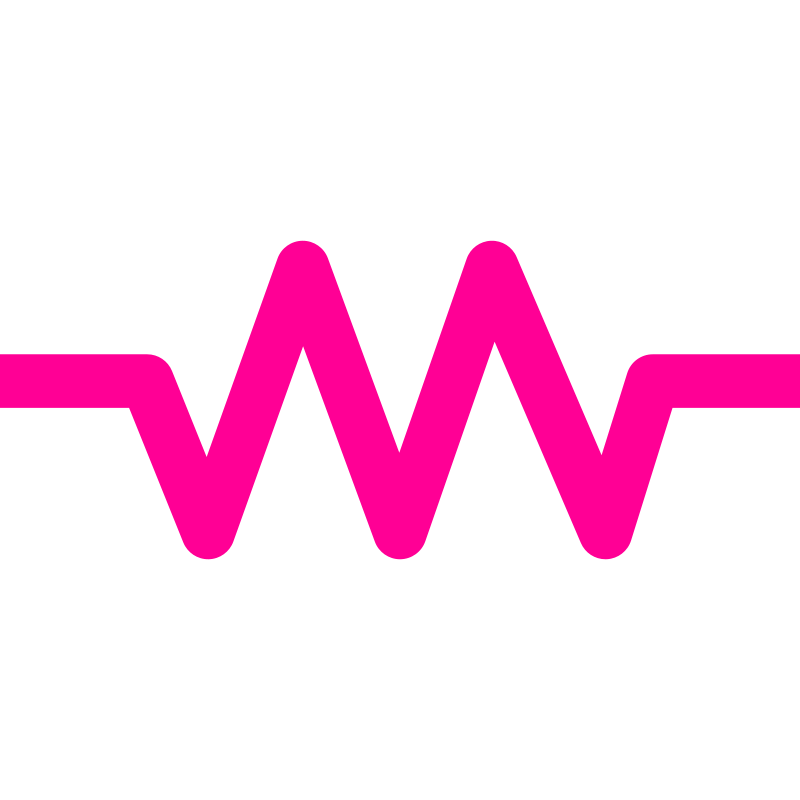

Disciplinas
Introdução à Programação
Ensina lógica de programação, estruturas de controle e algoritmos básicos, preparando os alunos para resolver problemas computacionais de forma prática.
80h
Prática/Teórica
Eletricidade Básica
Apresenta conceitos fundamentais de corrente, tensão e resistência, circuitos simples e segurança elétrica, formando a base para eletrônica e automação.
80h
Prática/Teórica
Sistemas Embarcados
Foca no desenvolvimento de sistemas integrados com hardware, incluindo programação de Arduino em C++, uso de sensores e atuadores, aplicando conceitos de automação e Internet das Coisas (IoT).
80h
Prática/Teórica